Las 24 están dibujadas con código propio (tools/pantallas.py para MSX, tools/pantallas2.py para MSX2) siguiendo los pasos de la rutina que las pinta, citada en cada una. Ninguna es una captura. Cada una se compara byte a byte (tools/coteja.py, tools/coteja2.py) con el cartucho ejecutado en un Z80 de Python o con la VRAM de openMSX, y todas coinciden enteras. En MSX, las letras de la BIOS son las de la C-BIOS japonesa.
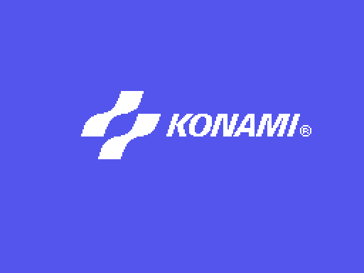
El logo de Konami (p09:8135), al acabar su animación: una línea cada cuadro, seis filas de 21 letras.
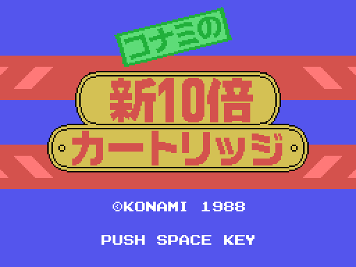
El rótulo «Konami no Shin 10-bai Cartridge», esperando el espacio (p09:8846). Solo sale con una BIOS japonesa.
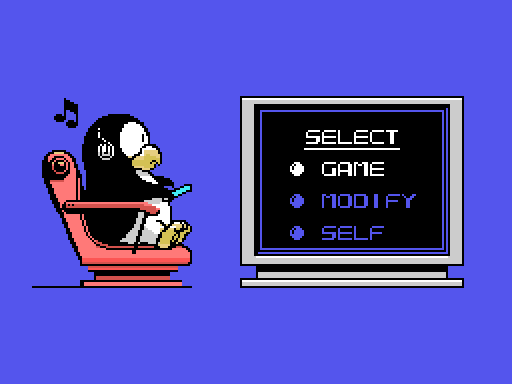
El menú principal (p09:82CA): GAME, MODIFY y SELF. GAME y MODIFY necesitan un juego al lado.
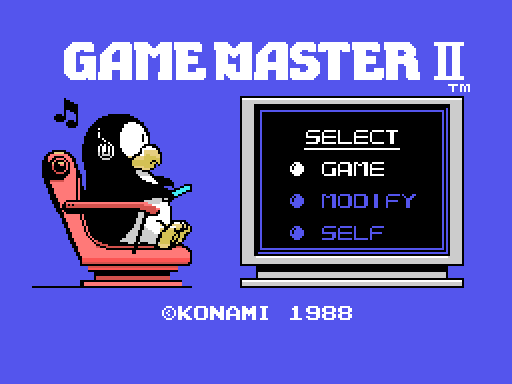
Con una BIOS no japonesa no hay rótulo, y el menú lleva «GAME MASTER II» y la fecha (p09:8D27).
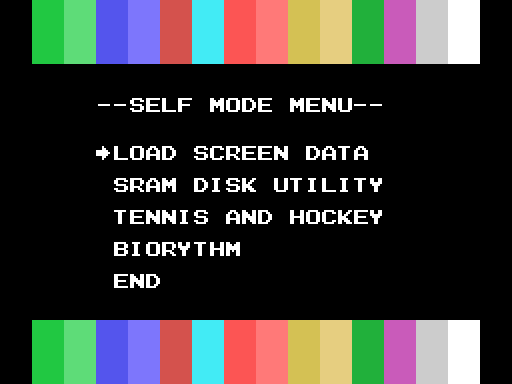
El SELF MODE MENU (p00:5DEE), con las casillas de los 16 colores arriba y abajo.
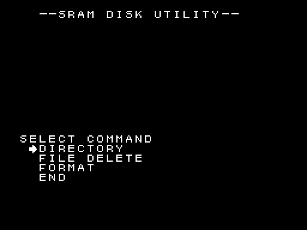
SRAM DISK UTILITY (p01:7973), con la fuente de la BIOS.
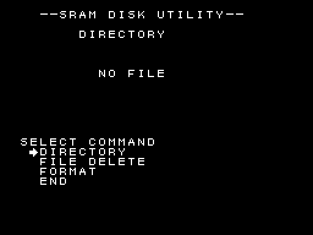
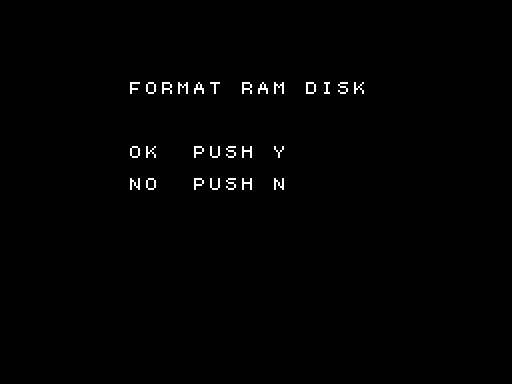
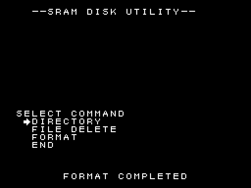
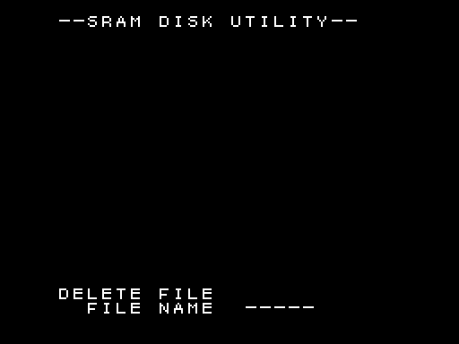
DIRECTORY con la SRAM sin formatear (p00:417D), la pregunta de FORMAT (p00:4333), su resultado y FILE DELETE pidiendo el nombre (p00:4209).
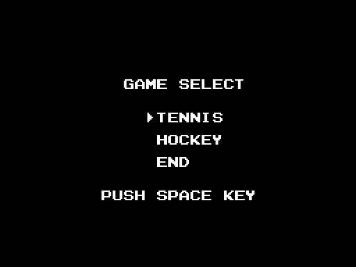
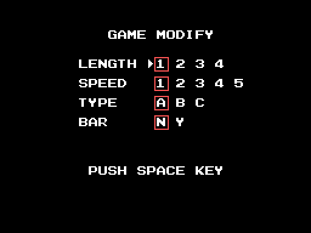
GAME SELECT (p07:909A) y GAME MODIFY (p07:9100); los recuadros rojos son sprites.
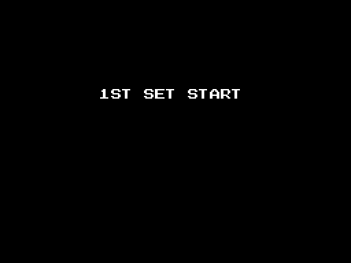
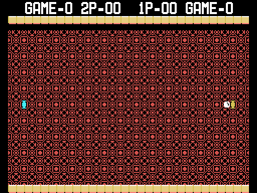
«1ST SET START» (p07:8141) y la pista de tenis lista para sacar (p07:81A2).
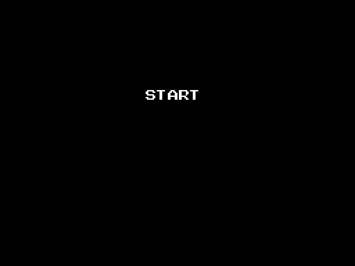
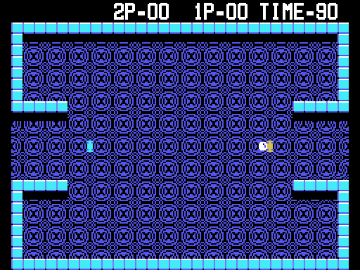
Lo mismo en el hockey, con el reloj en 90.
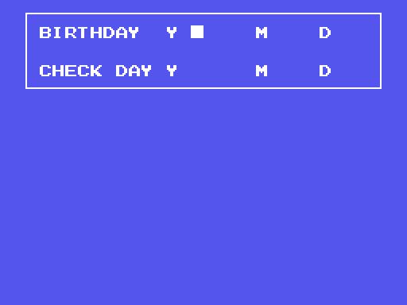
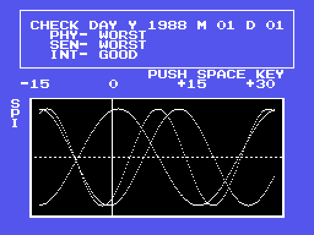
En MSX, pidiendo las fechas (p05:9674) y la gráfica con las fechas de ejemplo 1970-01-01 y 1988-01-01.
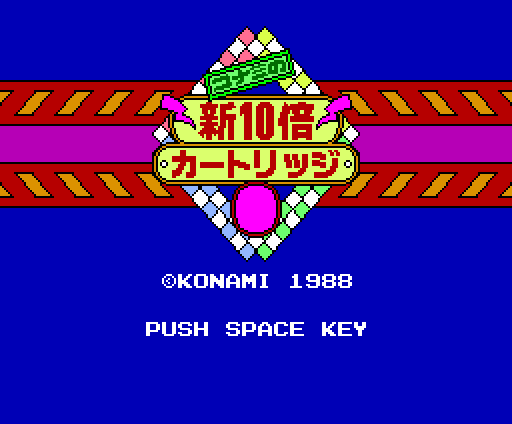
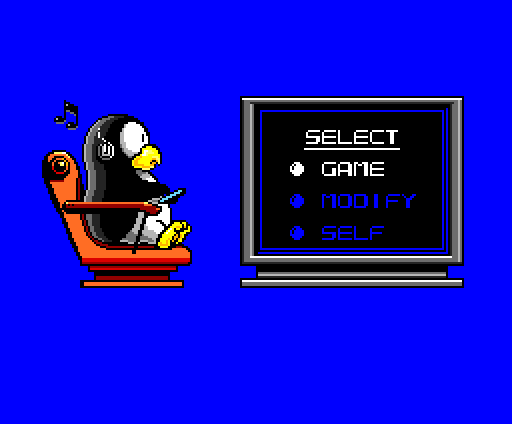
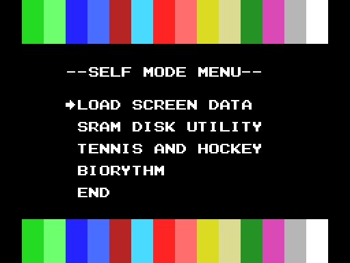
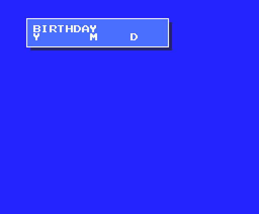
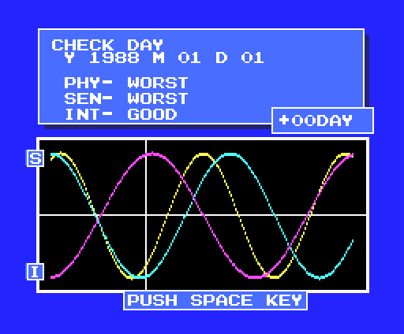
En un MSX2 con BIOS japonesa la presentación es otra: SCREEN 5, con los dibujos montados a base de comandos del VDP (p09:80DC, p09:8B20, p09:8692). El menú SELF es el mismo con la paleta del MSX2, y el biorritmo cambia entero (p05:8D22, p06:A006).